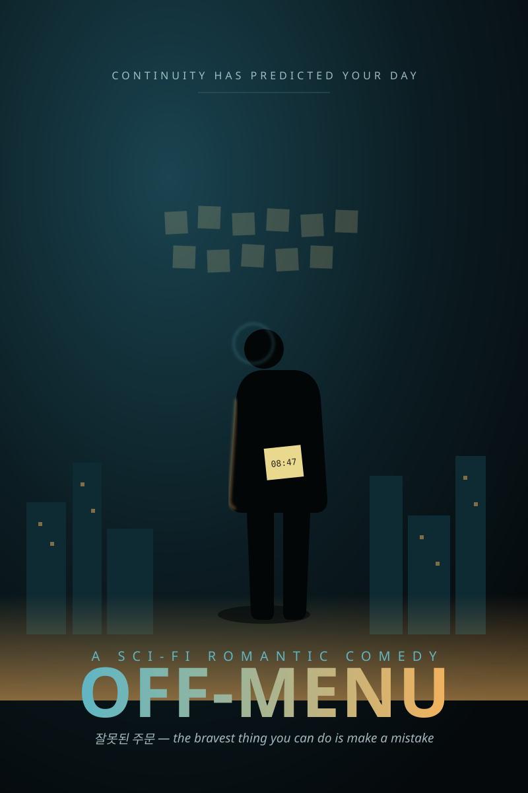

"In a world that plans your every move, the bravest thing you can do is make a mistake."
08:47 — 잘못된 주문
In a near-future Seoul where an AI pre-plans everyone's day, a lonely analyst finds the one moment it failed to predict and realizes a stranger broke the system on purpose to meet him — so he sets out to become the most unpredictable man in the city.
CONTINUITY pre-orders life for everyone — your coffee, your commute, the small talk you'll make — zero friction, zero risk, and quietly, zero romance. Why flirt when the algorithm already booked your wedding? Then at 08:47 a coffee is ordered to a stranger's table that the system never predicted. A Wrong Order. An act of pure free will — and someone did it on purpose, to meet him.
| Jin-woo | A reconciliation analyst whose job is to make reality match the forecast. Falls for a glitch before he ever meets the woman behind it. |
| Soo-ah | A "ghost" — invisible to the AI, terrified of being predictable around anyone. The only person in Seoul who orders off-menu. |
| The Ghosts | A giddy little resistance cell / meddling friend group who meet at the one café the AI can't model, feeding awful advice that keeps working. |
| CONTINUITY | The city's smug, maternal, increasingly flustered predictive AI. Its confirmation chime is a running gag. |
| The Anomaly | Jin-woo can't reconcile 08:47. Irritated, not yet in love. |
| The Order | He realizes a person did this — and starts falling for a data point. |
| The Build | He reverse-engineers her by ordering wrong on purpose, baffling every barista in Seoul. |
| The Doubt | His memories keep getting edited. Did they already meet? Did the system delete their best date? |
| The Map | He finds the other ghosts — and learns CONTINUITY quarantines couples it can't predict. They're next. |
| The Threshold | He walks out of his pre-planned life into an unscripted street to find her. No forecast, no net. |
To beat the quarantine, the Ghosts place one synchronized Wrong Order across the whole city at exactly 08:47 — crashing the forecast for sixty seconds. In that unpredicted minute, with nothing telling them what happens next, Jin-woo and Soo-ah finally get to choose each other. The system reboots. It still can't predict them. Good.
← Back to portfolioA creative adaptation. Full first act in film/ACT-ONE.md · treatment & screenplay in film/OFF-MENU.md · pitch in film/PITCH.md.